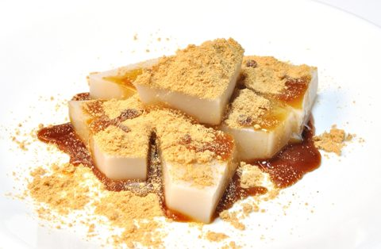

Kawasaki Daishi
川崎大師（金剛山金乗院平間寺）
About
Kawasaki Daishi (川崎大師) is the popular name of Heiken-ji , a Buddhist temple in Kawasaki, Japan. Founded in 1128, it is the headquarters of the Chizan sect of Shingon Buddhism. Kawasaki Daishi is a popular temple for hatsumōde. In 2006, 2.72 million people engaged in hatsumōde here, the third largest figure in Japan and the largest in Kanagawa Prefecture. In 2016, the temple made preparations to receive 3 million visitors over the same period. Keihin Electric Express Railway, the oldest railroad company in the Kantō region of Japan, commenced service in January 1899 to carry passengers to Kawasaki Daishi from Tokyo.
From Wikipedia, licensed under CC BY-SA 4.0.
Traditionally visited for:
Blessings are the traditional ones associated with this place's deities, name or local custom.
After your visit: one local bite

Kuzumochi 久寿餅
Fermented wheat-starch cake with black syrup and kinako — a Kawasaki Daishi specialty since the 1830s. The name means "long life".
Sumiyoshi (by the main gate) 川崎大師 山門前 住吉 · since 1917
Right by the temple's main gate, end of Nakamise street
Checked in 2026/11 that the shop still sells it (source 1, source 2). Opening days change — please check before you go. Photo (a typical kuzumochi, not necessarily this shop's): Ocdp, CC0, Wikimedia Commons.
Getting there
- From Yokohama: about 1 h by train & bus (12 km, rough estimate)
- From Tokyo (Tokyo Station): about 1 h 10 min by train & bus (17 km, rough estimate)
Official website (Japanese) — please check opening hours before you go.
Your lucky days to visit
In Japanese Nine Star Ki, the direction you travel from where you stay matters. Enter your birthday and where you will stay to see good days in the next three months.
Power spots nearby
- Sōji-ji Temple Buddhist temple · 6.2 km
- Zojoji Temple Buddhist temple · 13.8 km
- Sengaku-ji Temple Buddhist temple · 11.5 km
- Gōtoku-ji Temple Buddhist temple · 14.7 km
- Ikegami Honmon-ji Temple Buddhist temple · 5.4 km
- Atago Shrine Shinto shrine · 14.6 km